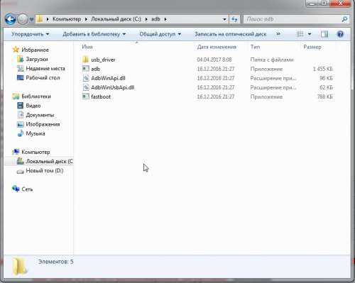
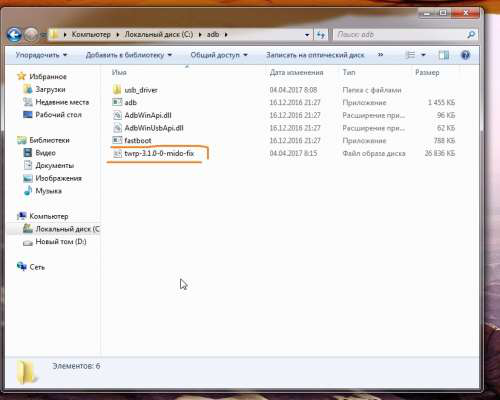
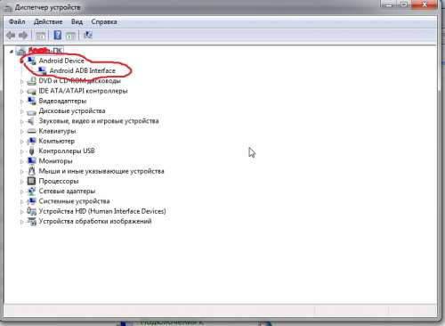
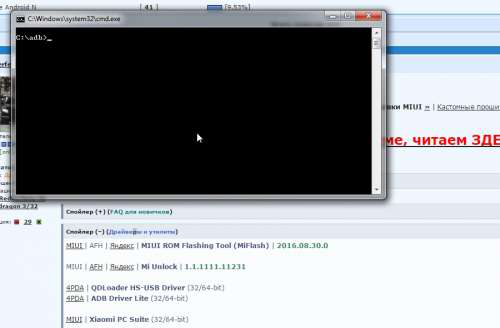
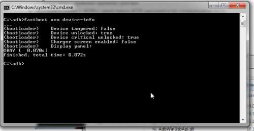
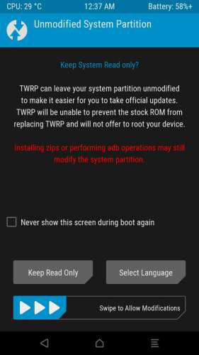
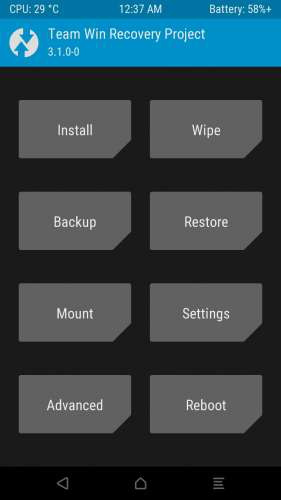

1.Качаем
 adb-windows.zip ( 9,26 МБ )
adb-windows.zip ( 9,26 МБ )и распаковываем, желательно на диск С (папку обзываем на латинице, без пробелов и черточек) получиться
Установка TWRP
http://4pda.ru/forum/index.php?showtopic=804582&st=1260#entry60081858
Идем в настройки-об устройстве-тапаем по версии MIUI, пока не пропишет что вы стали разработчиком. Дальше настройки-дополнительно-для разработчиков смотрим чтобы было включено заводская разблокировка и отладка по USB.
1.Качаем adb-windows.zip ( 9,26 МБ )
и распаковываем, желательно на диск С (папку обзываем на латинице, без пробелов и черточек) получиться
так
|
 802 x 640 (157,62 КБ) |
Качаем из шапки TWRP, я покажу на примере twrp-3.1.0-0-mido-fix.img скачиваем и закидываем в нашу папку с adb получится
так
|
 826 x 662 (104,69 КБ) |
2.Переводим телефон в fastboot (кнопка питание+громкость минус, до появления зайца в ушанке с надписью FASTBOOT) и подключаем к компу.
3.Проверяем (на примере windows 7), заходим в Панель управления-все программы-диспетчер устройств должно быть
так
|
 799 x 585 (80,15 КБ) |
, без знаков вопросов, если знак вопроса качаем драйвера из шапки темы ADB+driver+v1.17+lite.zip ( 9,04 МБ )
и устанавливаем в зависимости какая у вас система (32/64)
4.Далее идем в папку с adb и комбинацией shift+правая кнопка мышки – появится окно выбираем Открыть окно команд (не всегда может получиться с первого раза) Появиться
окно
|
 900 x 591 (161,01 КБ) |
5.Для проверки того что наш аппарат определился вводим команду
fastboot devices
если аппарат определяется появиться его номер, если нет пропишет waiting device
Если наш аппарат определился вводим команду
fastboot oem device-info
и получаем
вывод
|
 689 x 358 (77,16 КБ) |
где напротив device unlocked стоит true значит загрузчик разблокирован, если false закрыт.
Если у нас аппарат определился, загрузчик открыт в окне вводим команду
fastboot flash recovery имя_файла.img
где вместо имени файла прописываем наш рековери и соответственно у меня получиться следующая команда
fastboot flash recovery twrp-3.1.0-0-mido-fix.img
жмем enter прошла прошивка рековери и сразу не загружаясь в систему перезагружаемся в рековери зажав кнопку питания+громкость вверх и не отпускаем пока не провибрирует 10-15с, после этого через несколько секунд появится наш кастомный рековери. (В случае если прошили другой кастомный рековери, без фикса, а в некоторых случаях и с ним, то нужно зашить скрипт защиты здесь, там же и инструкция как это сделать правильно) или установить SuperSU
|
 720 x 1280 (97,61 КБ) |
|
 720 x 1280 (98,86 КБ) |